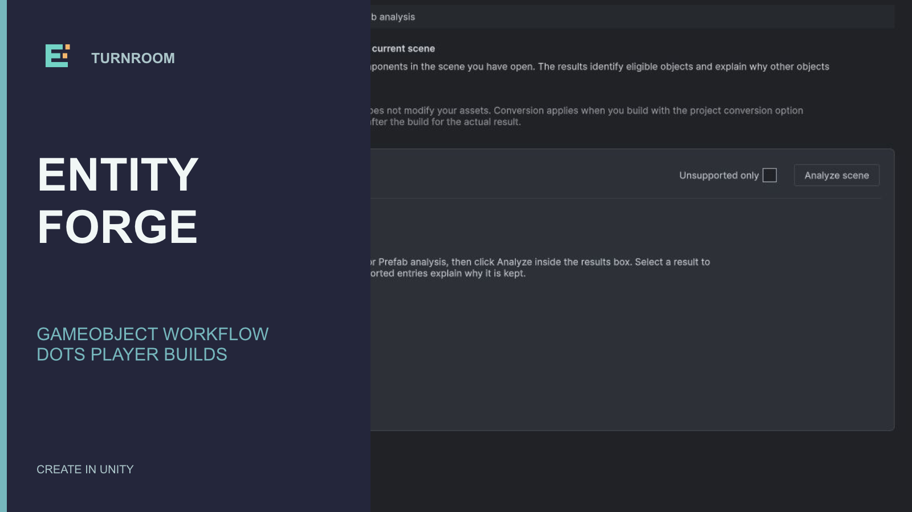
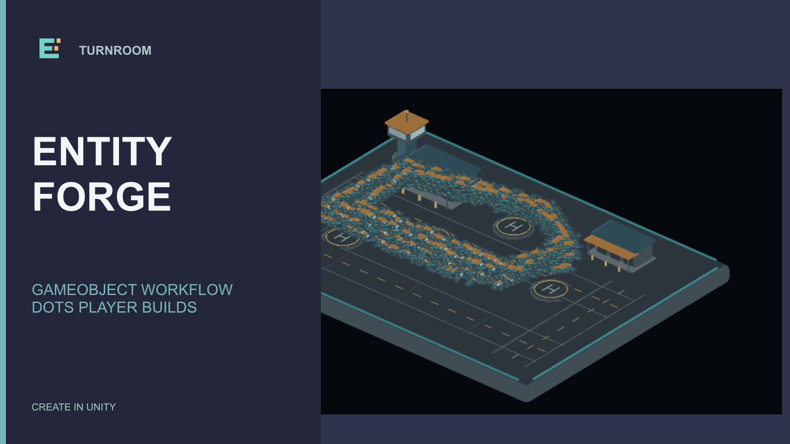
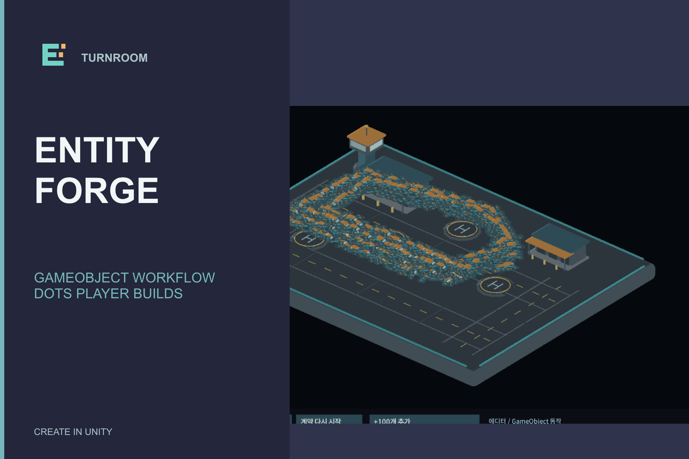
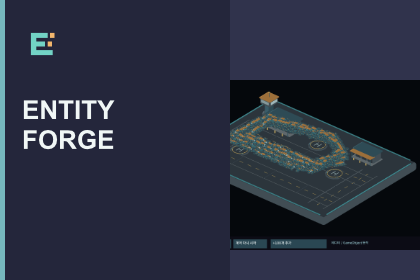
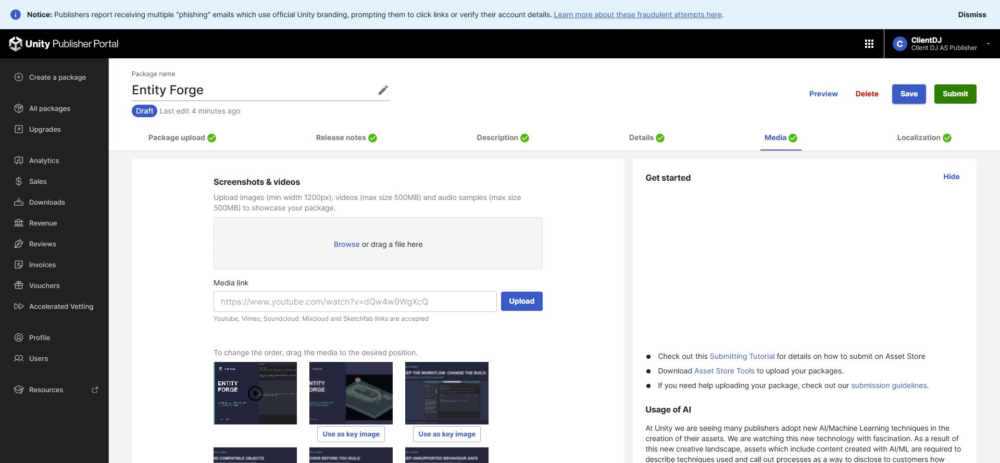

Tracefolio REPORTS & ISSUES
Tracefolio REPORTS & ISSUESEntity Forge 대표 구성: 실제 예제 장면 강조
완료설정 창 위주의 대표 이미지를 실제 드론 예제 장면으로 바꾸고 커버·카드·첫 갤러리에 적용했습니다.
작업 결과
실제 포털 초안에서 영상이 첫 번째이고 수정 대표 이미지가 두 번째입니다. 네 지원 로케일의 저장값과 서버 원본 해시를 확인했습니다.
변경 내용
적용 내용
전: 사용자가 정정한 이전 구성.

후: 실제 Affinity로 수정한 대표 이미지.

커버·카드에도 동일한 구성을 적용했습니다.


검증
실제 Affinity3.3.3.5004에서 프로젝트 소유의 편집 사본을 수정·저장했습니다. 세 원본을 닫았다 다시 열어 더티가 없는 것을 확인했고, 두 대표 이미지를 재출력한 PNG가 최종 출력과 SHA256까지 일치했습니다. 재열기 결과 · 네이티브 원본 경로·해시.
수정 전 대표 이미지를 포털에서 제거했습니다. 영상1개·이미지16개를 유지하며 영상→수정 대표 이미지 순서로 저장·새로고침했습니다. 영어·한국어·일본어·중국어 저장값이 일치하며, 서버 첫 이미지 PNG의 SHA256이 최종 출력과 일치합니다. 서버 검증 · 저장값.

남은 사항
심사 제출은 이 이미지 수정 완료와 별개로 미완료입니다. 새 도트 보정 기능 패키지 설치·업로드 준비를 이어가고 있습니다. 기존 영상은 순서만 변경했으며 영상 내용과 자동 포스터를 새로 제작한 작업은 아닙니다. DDT는 기존 실제 촬영 이미지 세 개의 승인된 배치를 보존했으며 현재 열려 있는 Unity 창을 새로 촬영했다고 주장하지 않습니다.
교훈: 제품 출시 기준에 DDT 세 테이블 구성과 Entity Forge 실제 예제 우선 기준을 반영했습니다. 전역의 기존 레퍼런스·실제 출력 검증 규칙과 중복되는 새 규칙은 추가하지 않았습니다. 최초5~10분 예상을 넘겼습니다. 출력 전송 시간 초과는 보존했고 문서·저장 상태 확인 후 기존 캐시 행 전송으로 출력했습니다.
작업 시간
- 제안 시간: 5~10분
- 실제로 완료된 시간: 2074초, 2026-11-05 15:33:02 KST까지 구성 수정·포털 검증. 이후 공개 배포 확인 별도.
- XERJ: 미사용 — 미디어 편집과 포털 저장값 검증으로 코드·심볼 검색 불필요.